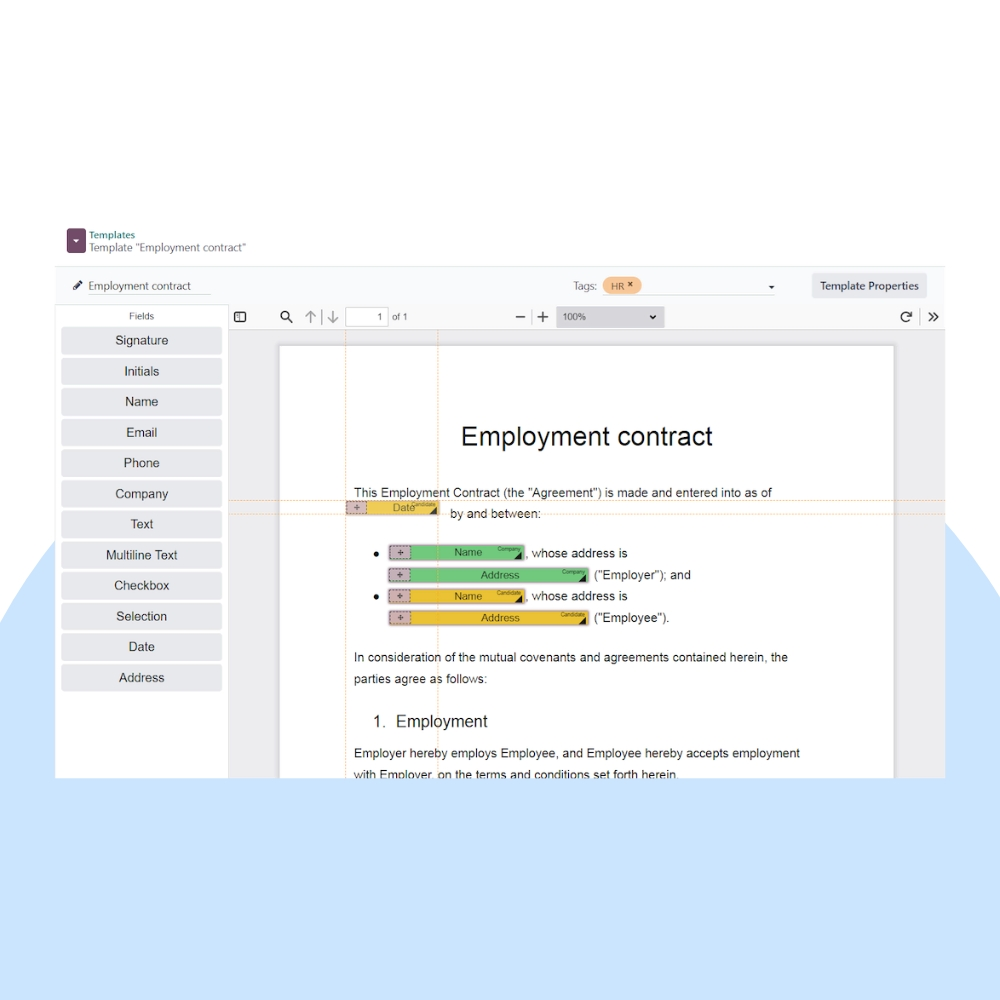
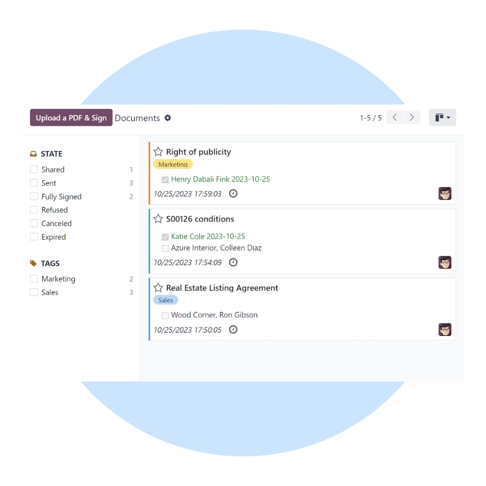
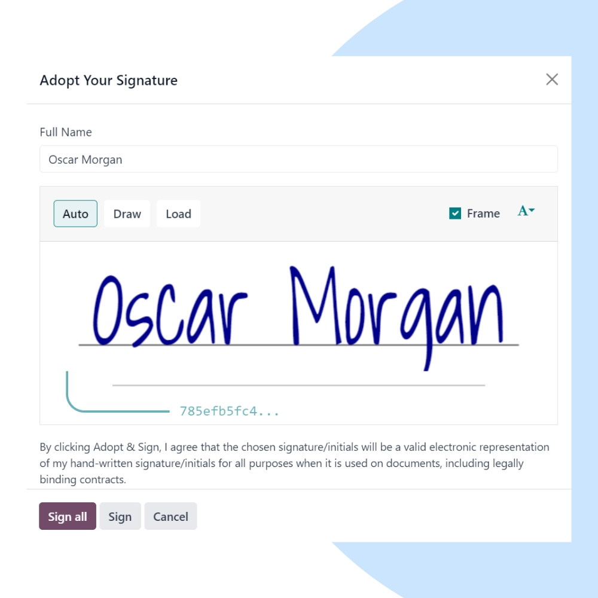

Sign documents digitally and close deals faster with Odoo Sign. We help businesses automate contract signing, approvals, and document validation with secure, legally binding eSignatures.
We configure Odoo Sign to match your document workflows, approval hierarchies, and legal requirements. Integrate seamlessly with Sales, HR, Accounting, and Documents for end-to-end automation.


Our implementation ensures secure, compliant, and user-friendly digital signing for contracts, HR documents, vendor agreements, and approvals.
Compliant with global eSignature laws and standards.
Get documents signed in minutes instead of days.
Support for multiple signers and approval sequences.
Never chase signatures with smart follow-ups.
Audit trails ensure full transparency and trust.
Link signed documents directly to Odoo records.
We help you continuously optimize digital signing, improve turnaround times, and maintain compliance as your business grows.
